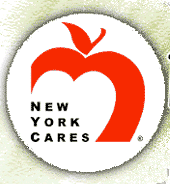
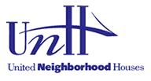

|
Friends and Sponsors |
||
|
The After-School Corporation (TASC), a nonprofit organization, was established by the Open Society Institute in April 1998 to enhance the quality, availability, and sustainability of after-school programs in New York City and State and, eventually, across the nation. www.tascorp.org
|
The Harlem Partnership Center (HPC) has served Upper Manhattan since 1995. A private, not-for-profit organization, HPC was established to provide technology and business services to Upper Manhattan communities. The Center addresses a wide range of urban concerns, including economic development, information and technology education and training. www.harlempc.org |

Founded in 1987, New York Cares is a non-profit organization that unites and enables caring New Yorkers to help improve our city through volunteer service and creative giving. www.nycares.org |
|
Founded in 1914, the Police Athletic League (PAL) is one of the largest non-profit youth agencies in New York City. PAL provides 65,000 children with the opportunities they need to lead meaningful and productive lives. www.palnyc.org |
 About UNH United Neighborhood Houses (UNH) is the umbrella organization for settlement houses throughout New York City. UNH was founded in 1919 to unify the settlement houses' collective efforts to achieve social reform and to provide a voice for the low-income and disenfranchised residents of settlement house communities. Its membership comprises one of the largest human service systems in New York City, with 36 agencies working at 335 sites to provide high-quality services and activities to more than half a million New Yorkers each year. www.unhny.org |
|